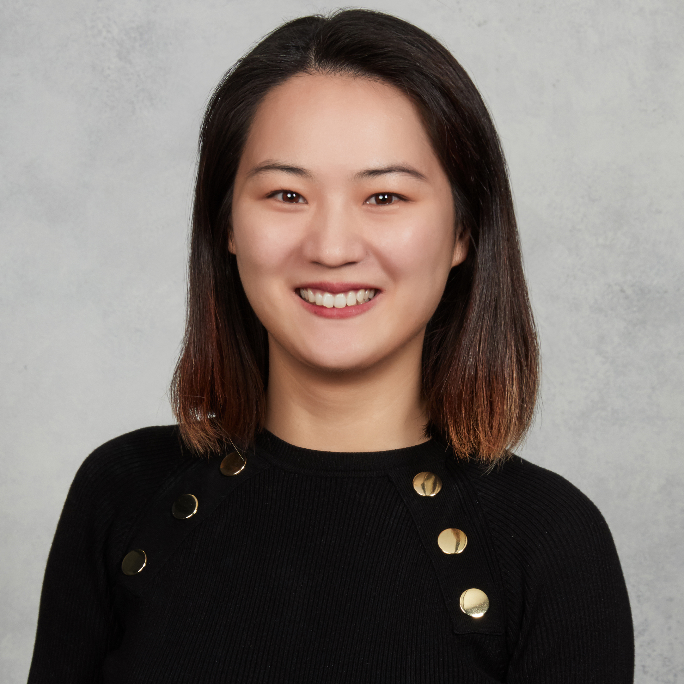

Ying Shi
Ph.D, Currently enrolled in the Georgia Tech Online Master of Science in Computer Science (OMSCS) program
N/A
About
I am a Ph.D.-trained life scientist with extensive experience in preclinical research who is seeking a data science internship focused on preclinical development and translational decision-making. I am currently enrolled in the Georgia Tech Online Master of Science in Computer Science (OMSCS) program, where I am strengthening my foundations in data science, machine learning, and computational problem-solving. My background spans in vivo and in vitro experimentation, molecular and cellular assays, and quantitative data analysis, enabling me to understand biological data both computationally and in the context of how it is generated during drug development.
Throughout my training, I designed and executed complex preclinical studies involving animal models, gene expression analysis (qPCR/RT-qPCR), protein assays (ELISA, Western blot), histology/IHC, and omics-based approaches. I have co-authored publications involving RNA-sequencing analyses, contributing to data processing, interpretation, and biological validation. These experiences strengthened my ability to work with high-dimensional datasets and assess data quality, reproducibility, and biological relevance.
I have developed hands-on data analysis skills using Python, including NumPy, Pandas, and Matplotlib for data wrangling and visualization, with exposure to scikit-learn for exploratory modeling and pattern discovery. I have also used R, GraphPad Prism, and Excel to analyze and communicate experimental results that informed study design and translational decisions.
I bring a strong learning mindset and adaptability, with a proven ability to rapidly acquire new analytical skills and integrate them with deep biological domain knowledge. I am particularly motivated by data science applications in preclinical development—such as biomarker discovery, dose optimization, and translational modeling—and I am eager to contribute rigorous scientific thinking while continuing to grow my data science and machine learning expertise through an applied internship experience.
Program interests
- Data-science directions: Computational Biology, Systems Pharmacology, Drug Repurposing Prediction
- Drug-development stage: 🧫 3. Preclinical Development
- Programming level: Intermediate
- Tools and platforms: Github Personal Website Development (https://github.com/)